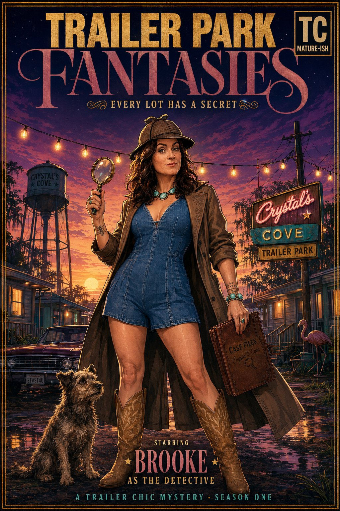
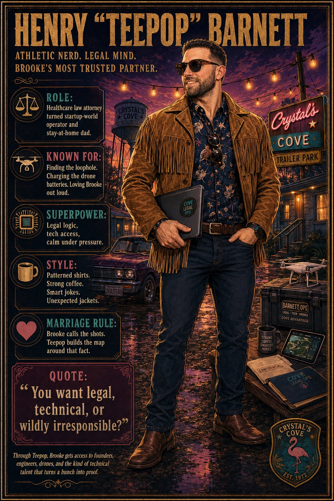
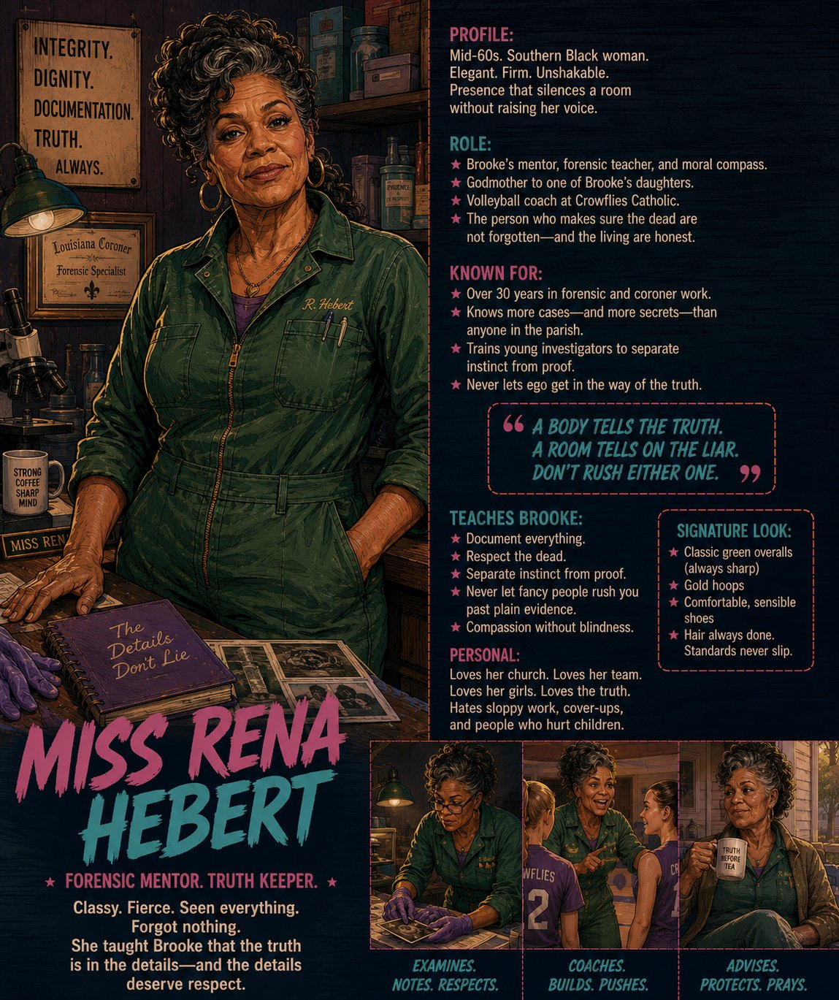
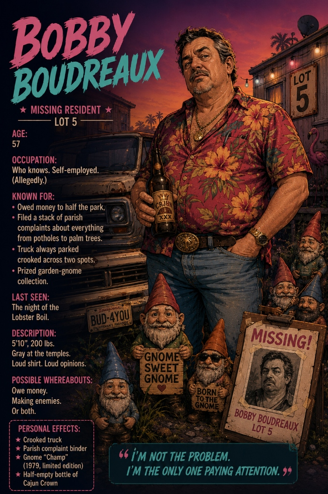
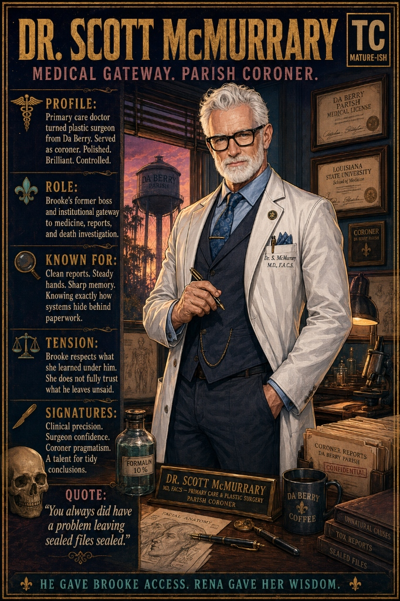
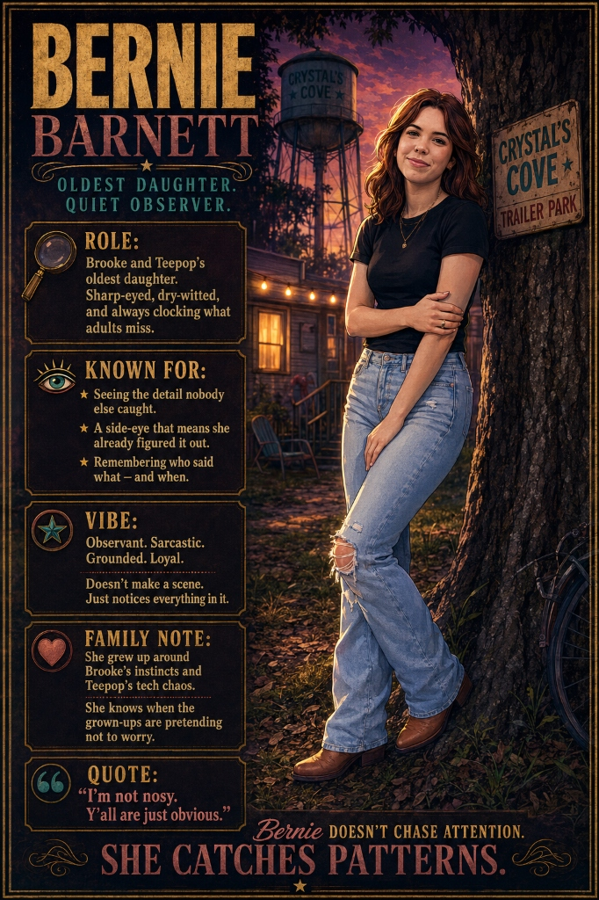
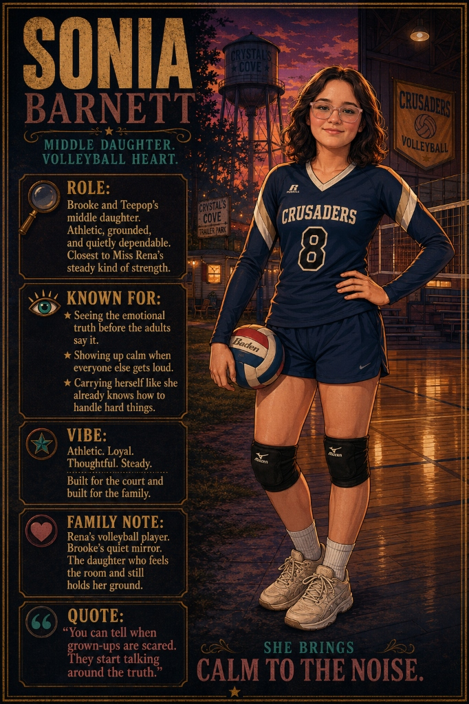
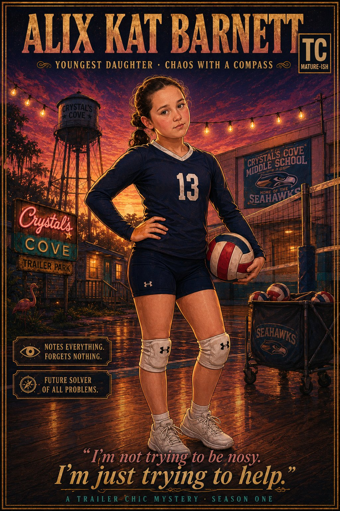

Loading Chapter 1 Manuscript...
Series Production Bible
DISTILLED CANON CONTEXT
"She doesn't solve mysteries. She corrects the record."
A medically trained, forensically seasoned trailer-park detective investigates a neighbor's disappearance and uncovers a land-grab conspiracy threatening her community — Southern-Gothic and slow-burn, but funny, warm, and full of people who think they're living their most glamorous life and have no idea how ridiculous they are. Trailer chic.
Tone Rules
- Atmospheric Southern-Gothic + Camp Humor + Heart
- Slow-burn Brooke & Teepop marriage deepening under pressure
- Found-family warmth & non-linear trauma healing
Investigation Engine
- Brooke reads human truth
- Rena checks forensic truth
- Teepop checks legal/tech truth
- Sheila/Ricky accidentally supply keys

Brooke "Bug" Barnett
Unofficial Truth-Finder / Ex-Nurse
Public Face: Trailer-chic Sherlock, cowboy boots, bee tattoo, turquoise statements, long duster.
Superpower: Hyper-awareness of changes (too-clean rooms, crooked trucks, discrepancies).
Wound: Grew up in Eret with mother Kat and stepfather Larry. Knows undocumented truth gets called gossip.
Motto: "People lie. Bodies don't. Paperwork tries, but it's bad at it."

Henry "Teepop" Barnett
Ecosystem Operator / Healthcare Lawyer
Support: Brick-house build, patterned shirts, supports Brooke's logic, never rescues or overshadows.
Tech Reach: Connects her to water drones, whiteboards, GPS logs, legal loopholes, and waterproof tech.
Dynamic: "You look dangerous. I packed your gloves, charged your flashlight, and checked the back exit. I love you."

Miss Rena Hebert
Forensic Elder & Moral Anchor
Presence: Classy Southern Black woman, mid-60s, green overalls. Quiet, heavy authority.
Function: Volleyball coach at Crowflies Catholic. Taught Brooke: "Instinct is a bell. Evidence is the door you open after you hear it."
Personal Arc: Old case history that she never let go, which converges in the season's climax.

Bobby Boudreaux
Missing Resident / Lot 5
Lore: Age 57. Owed money to half the park. Prize garden gnome collection. Loud shirts, louder opinions.
Known for: Filing parish complaints about everything from potholes to palm trees. Truck parked crooked across two spots.
Quote: "I'm not the problem. I'm the only one paying attention."

Dr. Scott McMurrary
Parish Coroner / Medical Gateway
Profile: Primary care doctor turned plastic surgeon from Da Berry. Polished, brilliant, controlled, comfortable in gray.
Tension: Brooke respects what she learned under him but does not fully trust what he leaves unexplained.
Quote: "You always did have a problem leaving sealed files sealed."

Bernie Barnett
Oldest Daughter / Quiet Observer
Role: Sharp-eyed, dry-witted. Chronically clocking what adults miss. Vibe: Observant, sarcastic, loyal.
Pattern: Grew up around Brooke's instincts and Teepop's tech chaos. Knows when grown-ups are faking.
Quote: "I'm not nosy. Y'all are just obvious."

Sonia Barnett
Middle Daughter / Volleyball Heart
Stats: Plays #8 for Crowflies Crusaders. Athletic, steady, shares Rena's calm.
Insight: "You can tell when grown-ups are scared. They start talking around the truth."
Reflections: Brooke's quiet mirror; the daughter who feels the room and still holds her ground.

Alix Kat Barnett
Youngest Daughter / Seahawks Catalyst
Stats: Seahawk #13. "Chaos with a compass". Overhears everything, blurts out truths, named after grandmother Kat.
Insight: "I'm not trying to be nosy, Mom. I'm just trying to help!"
Crystal Mouton
Park Manager & Self-Crowned HOA Queen
Optics: Velvet scrunchie, bedazzled glasses on a chain, monogrammed clipboard, athletic manager styling.
Motto: "Standards don't lower themselves."
Motivation: Protecting her Cove empire at any cost; has a quiet, compromised contract linking her to the land deal.
Tammy Beaumont
Bathtub-Wine Vintner
Style: Leopard print, giant gold hoops, package-opening acrylics, turquoise accents.
Motto: "Trades secrets for favors."
Investigation role: Bathtub wine operations mean she knows exactly whose secrets are buried where. Flat, knowing eyes.
Dale Scruggs
Director of Perimeter Security
Armor: Tactical vest over Hawaiian shirt, Oakleys on forehead indoors, golf cart, 14 president-named cameras.
Behavior: "We don't call 911. We call Dale." Stringing caution tape around tricycles and propane tanks.
Role: Worsens scene perimeters; provides red-herring trail-cam videos; tries to leverage deals.
Crystal's Cove Mobile Home Community
Established in 1972, this Acadiana bayou trailer park lost the "L" on its main sign, welcoming visitors with: "uxury Living at Affordable Prices." Residents treat it like a premium luxury resort. It features a clubhouse that is a double-wide with a disco ball, and amenities consisting of an above-ground pool and an orange soda vending machine.
Key Settings Mapping
- Lot 5 (Bobby's Trailer): The heart of the mystery. Dripping AC unit, neat gnome row with a clean gap, truck parked crooked to block sightlines.
- The Bayou Treeline: Enclosing the Cove in shadows. Survey stakes, disturbed earth, and consolidated properties.
- Da Berry: Coroner archives and parish offices where McMurrary operates.
- Eret: Brooke's hometown, a source of memories and historical records.
Do-Not-Drift Consistency Rules
These are the locked canonical guidelines. Writing any draft that violates these is strictly forbidden.
1. Bobby Boudreaux
Missing resident's name is Bobby Boudreaux. Never refer to him as "Doc Bourbon".
2. The Name "Cricket"
Cricket is the gray terrier dog ONLY. No human character may ever share or use this name (Sugar was renamed from Cricket McCoy to Sugar McCoy to resolve this).
3. Louisiana Crawfish
Setting is Acadiana, Louisiana. The community feast is a Crawfish Boil, never a lobster boil.
4. Brooke Barnett is Boss
Brooke is the primary investigator and makes all final decisions. Teepop supplies drone/technical and legal help, but never rescues or overshadows her.
5. Distinct Locations
Do not confuse places: Eret (backstory/town), Da Berry (coroner), Crystal's Cove (current home), Crowflies Catholic (volleyball school).
6. Trauma Handling
Trauma is treated with care. Brooke is evidence-led. Her mother Kat is a strong survivor (never weak), and stepfather Larry is a dangerous cop (never a cartoon).
Season Outline & Beat Sheet
Explore the 15-chapter locked outline of Season One. Select a chapter node to view clues, cliffhangers, and narrative tasks.
Chapter 1 — Welcome to Crystal's Cove
Purpose: Establish world, cast, voice, and the inciting disappearance.
Narrative Beats
Open on Brooke's voiceover. Inciting alarm sounded by Sugar McCoy at dawn. Brooke snaps on blue gloves, shifts context from gossip to an actual case.
Clues & Markers
Crooked truck parked to hide line of sight, 11 of 12 gnomes (one missing leaving fresh dark divot), tabbed complaint binder on the table, bleach/lemon smell at the frame.
Misdirection
"Bobby owed money and skipped town." Everyone agrees it was a voluntary run.
Cliffhanger
Brooke opens the complaint binder and declares it is not noise: "It's a man trying to be believed."
Continuity Guardrails Auditor
Paste a chapter draft or type here to audit naming continuity, setting compliance, and rule checks in real-time.
No continuity drifts detected. Type in the left box to begin.
Novel Compiler Console
Drive the backend layout compilation pipeline. Select your parameters and execute the build.